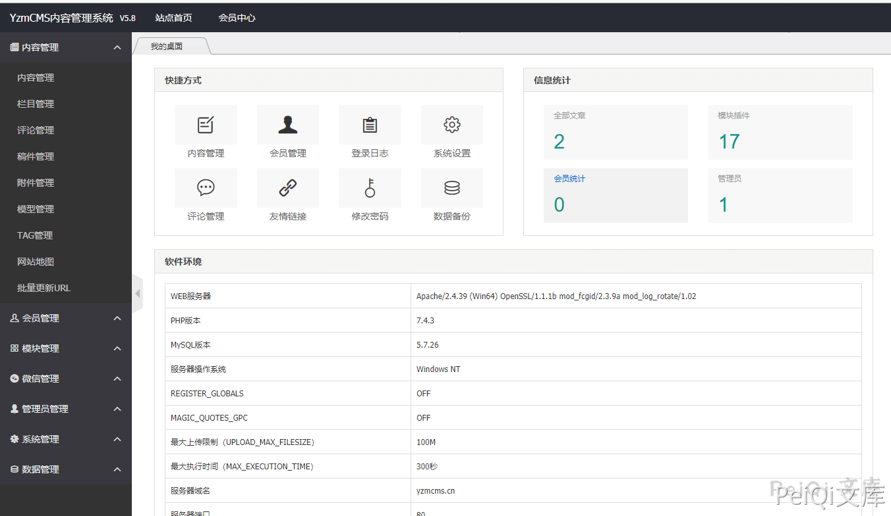
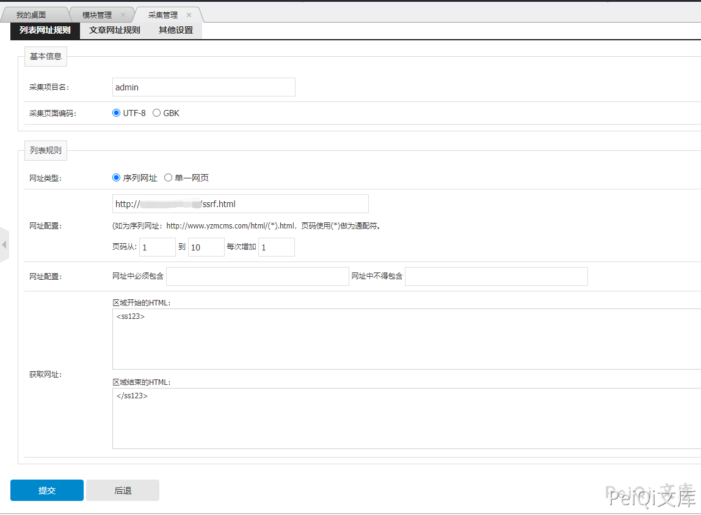
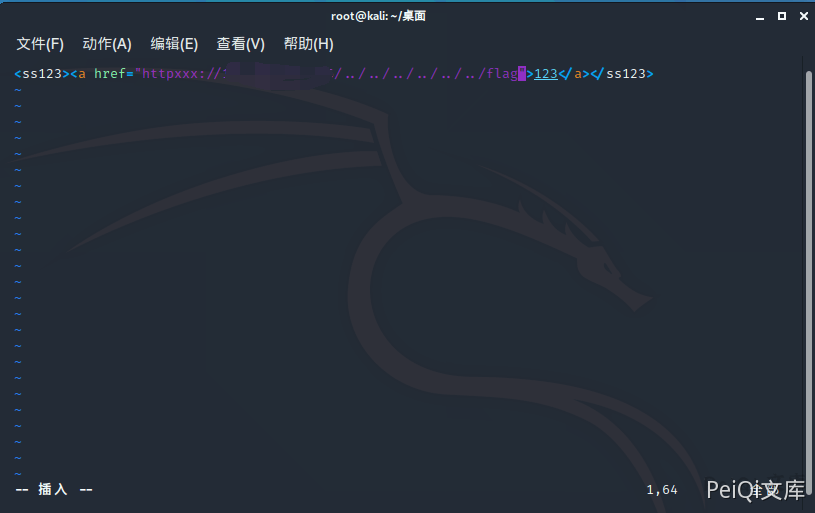
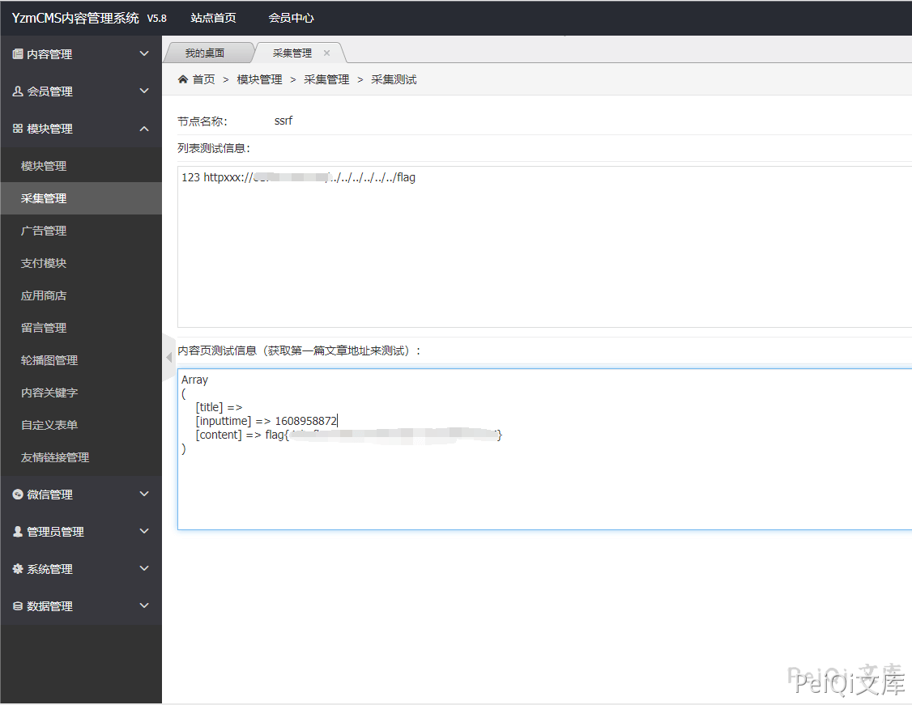
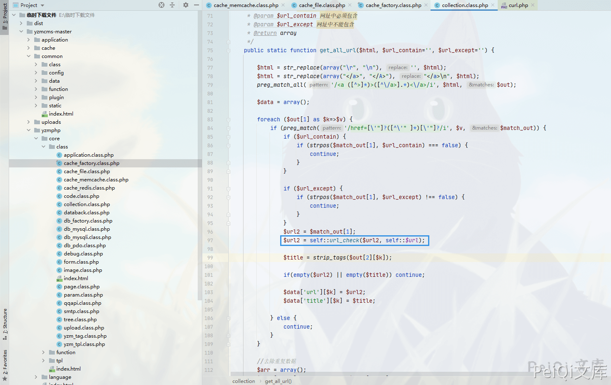

YzmCMS Version 小于V5.8正式版 后台采集模块 SSRF漏洞¶
漏洞描述¶
YzmCMS内容管理系统是一款**轻量级开源内容管理系统**，它采用自主研发的框架**YZMPHP**开发。程序基于PHP+Mysql架构，并采用MVC框架式开发的一款高效开源的内容管理系统，可运行在Linux、Windows、MacOSX、Solaris等各种平台上。
源码存在协议识别的缺陷，导致存在SSRF漏洞
参考阅读：
漏洞影响¶
YzmCMS version < V5.8正式版
环境搭建¶
https://github.com/yzmcms/yzmcms
按照文档安装即可

漏洞复现¶
登录后台 → 模块管理 → 采集管理
添加采集规则

在你的服务器上编辑HTML代码

- 根目录可能不同，payload需要更改
点击采集读取根目录下的 Flag

出现漏洞的代码位置 yzmcms/yzmphp/core/class/cache_factory.class.php

这里调用 url_check 函数

可以看到这里只检测了前4位是否为 http，使用 httpxxx 即可绕过